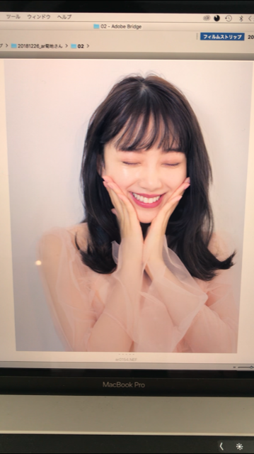
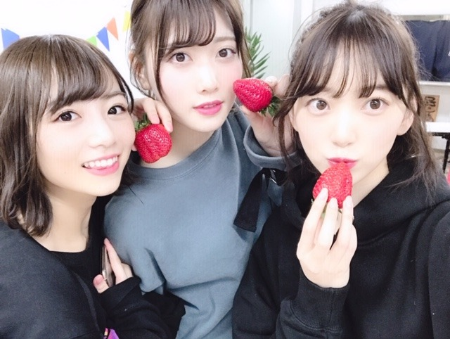
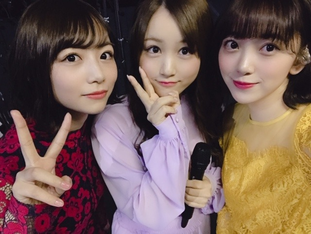
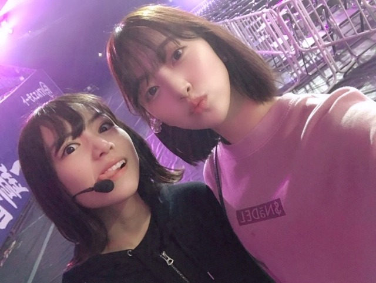
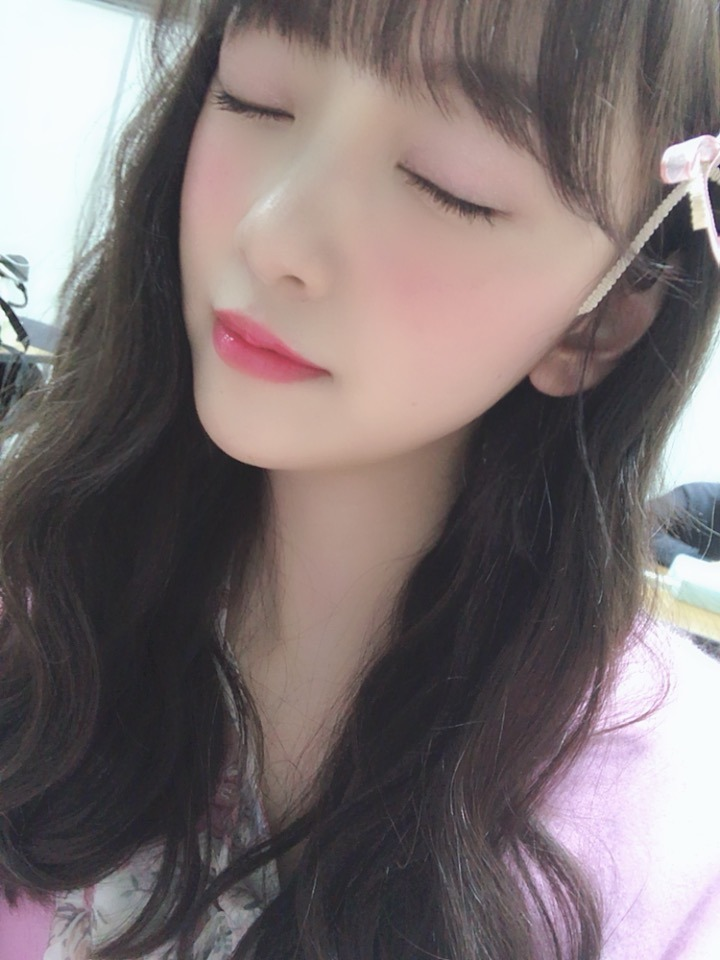

2019/0307Thuやほ
みなさん #みおなの日 でお祝い？を
してくださりありがとうございます。笑
友達からもみおなの日だ！と何件か連絡がきて
3月7日を特別に感じてしまっています。笑
どうせなら祝日にしてお休みにしたいなぁ
たくさん食べてたくさん寝る日✨
どうかな？？
といいつつも私は朝から撮影や振り入れをしていました〜合間に蘭世とご飯食べて元気をチャージしたよ！
朝ごはんは最近は味噌煮込みうどんを食べることが多くてあ〜〜東海県民やなぁとしみじみ。
名古屋飯は本当になに食べても美味しいの！
定期的に味噌が恋しくなる...

春春〜春ですね〜

塩アイス〜♩
初期から私を優しく見守っててくれてるふたり^ ^

当たり障りのない話 も個人的にすきな曲で披露できて嬉しかったです！
歌詞も振りもTHEアイドルでかわいいの✨

ねえ笑
この日奈子の悪い顔だいすき。笑
#同い年 #同期 #性格は正反対だけどどこか似てる
#ライバル #仲間 #好き
#堀北コンビ
2期生集まるとわちゃわちゃ
テンションおかしい子が多くて裏ではずっと笑っぱなしです。笑
京セラドーム4日間、凄く充実していました！
ライブってやっぱり楽しい✨✨
大阪まで来てくれた皆さんありがとうございます！
タオル うちわ サイリウム 笑顔
たくさん見れました。
そして西野さんの卒業ライブもありました。
正直まだ寂しいしどんどん背中を見ていた先輩がいなくなっていくことに焦りや不安も感じます...
たくさんのことを学んで、乃木坂っていいなぁって何度も感じて、1期生の方の煌びやかな存在があったからわたし達2期生が乃木坂に憧れ、頑張ってこれたんだなぁと改めて。
今までの西野さん含め先輩が作り上げてきてくださった大切なものを今いるメンバー、そしてファンの皆さんとで守っていきたいしもっともっと成長していなくちゃいけないなぁと強く思いました！
ダンスが元々苦手だった私がダンスを好きになり、パフォーマンスやライブを通して自分を魅せるっていうことの大切さを知れたのはいつもライブで先陣を切って輝いていた引っ張ってくれていた西野さんの存在のおかげです。
本当に、お疲れ様でした✨

ピンクメイクも春〜だけど
最近はオレンジ！に目がないです✨
今年の春はオレンジメイクを極めます！うむ！
では。
2019/03/07 21:00
コメント(427)
未央奈ちゃんブログ更新ありがとうございます 大好きです
大好きです
ゆるるまじ⊂(ο･㉨･ο）⊃”くまﾃﾞｽ…
プティ殿けんぴゅーﾜﾝ (･x･U)≡≡≡３ ドラマ「ザンビ」第８話の高所堀殿‼めっちゃ頼もしいなぁ(o≧▽ﾟ)oニパッ♡ダンス堀殿ボイスに癒されうれぴーぽーo(￣◎￣)o ﾊﾞﾌﾞｩ♡箸くん♡のりん会♡シミュレーションダジャレ♡プレゼントトークよきよきピーナッツでばいころまるロンo(^-^o)(o^-^)oロンo(^-^o)(o^-^)oロン
プティ殿けんぴゅーﾜﾝ (･x･U)≡≡≡３ ドラマ「ザンビ」第８話の高所堀殿‼めっちゃ頼もしいなぁ(o≧▽ﾟ)oニパッ♡ダンス堀殿ボイスに癒されうれぴーぽーo(￣◎￣)o ﾊﾞﾌﾞｩ♡箸くん♡のりん会♡シミュレーションダジャレ♡プレゼントトークよきよきピーナッツでばいころまるロンo(^-^o)(o^-^)oロンo(^-^o)(o^-^)oロン
未央奈～こんばんは！
ぽてとです！
二期生やっぱ最高♪
確かに堀北2ショのデビルひなこ
良い顔しとるー(笑)
もうすっかり暖かくなってきたけど、
朝晩はまだ冷えたりするから
気をつけてねー
じゃあまたね！
ぽてとです！
二期生やっぱ最高♪
確かに堀北2ショのデビルひなこ
良い顔しとるー(笑)
もうすっかり暖かくなってきたけど、
朝晩はまだ冷えたりするから
気をつけてねー
じゃあまたね！
未央奈ちゃん、おつかれさま！
そうか、３月７日はみおなの日だったのね。
記憶しておきます！
最近、未央奈ちゃんの画像がめちゃくちゃかわいいのばかりで癒されるよ。
さっき放送された雨トーーク観ていたら、未央奈ちゃん、今度の絵心ない芸人に出るの！？
めっちゃ楽しみ！！
応援してます！！
そうか、３月７日はみおなの日だったのね。
記憶しておきます！
最近、未央奈ちゃんの画像がめちゃくちゃかわいいのばかりで癒されるよ。
さっき放送された雨トーーク観ていたら、未央奈ちゃん、今度の絵心ない芸人に出るの！？
めっちゃ楽しみ！！
応援してます！！
バスラお疲れ様でした！
パフォーマンス素敵でした！
パフォーマンス素敵でした！
素晴らしいスリーショット！！！
ブログ更新ありがとー
今度岐阜弁でブログ書いてみてー笑
今度岐阜弁でブログ書いてみてー笑
昨日の３月７日は、語呂合わせで未央奈の日だったんだ。
この日もいつか祝日にしてくれれば良いなぁと思っているよ。
話変わるけど、４日間のバスラ本当にお疲れ様。俺も２日間のライブビューイング楽しかったよ。
改めて乃木坂7歳の誕生日おめでとう。
８年目も変わらず応援するよ。
この日もいつか祝日にしてくれれば良いなぁと思っているよ。
話変わるけど、４日間のバスラ本当にお疲れ様。俺も２日間のライブビューイング楽しかったよ。
改めて乃木坂7歳の誕生日おめでとう。
８年目も変わらず応援するよ。
未央奈ちゃんブログ更新ありがとうございます大好き
堀さん、おはようございます。
昨日3月7日は「みおなの日」ということで、国民の祝日でしたうそ（笑）。でも名前にちなんだ日にちって、何となく心がうきうきするものですね。
名トリオ塩アイスからの北野さんとのツーショット。毎度おなじみ北野さんの威嚇がおー……じゃなくて威嚇顔が恐かわいい（ふふ）。同期にして同い年。これからもお互いを高め合いつつ、乃木坂46をリードする存在でいてください。
四日間に渡るバースデイライブお疲れさまでした。七年間の歴史を物語る全177曲のパフォーマンス。それぞれの曲に皆いろいろな思いを持っています。8年目も元気に坂を上っていきましょう。
Day4は西野さんの卒業コンサートでした。西野さんらしい、やさしさと謙虚さと笑顔をもってステージに臨む姿もこれで見納め。これまで乃木坂46にいてくれて本当にありがとうございました。これからの活躍を応援しています。
ではまたコメント寄せに参上します。堀さんもどうぞよい週末を。
さらばだ、また会おう！（気球に乗って去りぬ〜）
昨日3月7日は「みおなの日」ということで、国民の祝日でしたうそ（笑）。でも名前にちなんだ日にちって、何となく心がうきうきするものですね。
名トリオ塩アイスからの北野さんとのツーショット。毎度おなじみ北野さんの威嚇がおー……じゃなくて威嚇顔が恐かわいい（ふふ）。同期にして同い年。これからもお互いを高め合いつつ、乃木坂46をリードする存在でいてください。
四日間に渡るバースデイライブお疲れさまでした。七年間の歴史を物語る全177曲のパフォーマンス。それぞれの曲に皆いろいろな思いを持っています。8年目も元気に坂を上っていきましょう。
Day4は西野さんの卒業コンサートでした。西野さんらしい、やさしさと謙虚さと笑顔をもってステージに臨む姿もこれで見納め。これまで乃木坂46にいてくれて本当にありがとうございました。これからの活躍を応援しています。
ではまたコメント寄せに参上します。堀さんもどうぞよい週末を。
さらばだ、また会おう！（気球に乗って去りぬ〜）
みおなの日おめでとう？
「ダンスが元々苦手だった私がダンスを好きになり」か。いいね！
堀ちゃんと言えば、自分の歌割りのあとなどで後ろを振り向く直前にみせるとってもとっても素敵な笑顔が魅力だね！いつも楽しみ。
「ダンスが元々苦手だった私がダンスを好きになり」か。いいね！
堀ちゃんと言えば、自分の歌割りのあとなどで後ろを振り向く直前にみせるとってもとっても素敵な笑顔が魅力だね！いつも楽しみ。
未央奈ちゃんありがとうございます！楽しみにしてます‼頑張ります‼ありがとうございます‼今日から頑張ります‼気を付けて下さい！
レコメンでの声、元気そうでホッとしました！
味噌入っるの美味しいよね、体にもいいし
僕も大好きです。
これからも期待してます。
無理しないでね❗
味噌入っるの美味しいよね、体にもいいし
僕も大好きです。
これからも期待してます。
無理しないでね❗
堀ちゃん、バスラお疲れさま。
きぃちゃんの悪い顔、私も大好きです｡
ホント悪い顔するなぁ、って思った！
体調に気を付けてお仕事頑張って下さい。
いつも楽しい気持ちにさせてくれてありがとう。応援してます。
きぃちゃんの悪い顔、私も大好きです｡
ホント悪い顔するなぁ、って思った！
体調に気を付けてお仕事頑張って下さい。
いつも楽しい気持ちにさせてくれてありがとう。応援してます。
みおなさん、こんにちは。
ブログ更新ありがとう！
みおなの日、おめでとう！
大好きな人の記念日を知る事ができて
嬉しいよ。また色々教えて下さいね！
京セラでのバスラ四日間
お疲れ様でした。みおなさんの輝いた
姿を間近で見れて良かったよ。また、
サンクエトワールの曲が大好きだから
現地で直接聞けて良かったです。
七瀬さん、今度は美彩さんが卒業と
寂しいけど、ファンの一人として
ずっと乃木坂さん、みおなさんと共に
ありたいと考えているので、これからも
応援しています。
長くなってしまったけど、読んでくれて
ありがとうございます。
みおなさんの事が大好き！では！
ブログ更新ありがとう！
みおなの日、おめでとう！
大好きな人の記念日を知る事ができて
嬉しいよ。また色々教えて下さいね！
京セラでのバスラ四日間
お疲れ様でした。みおなさんの輝いた
姿を間近で見れて良かったよ。また、
サンクエトワールの曲が大好きだから
現地で直接聞けて良かったです。
七瀬さん、今度は美彩さんが卒業と
寂しいけど、ファンの一人として
ずっと乃木坂さん、みおなさんと共に
ありたいと考えているので、これからも
応援しています。
長くなってしまったけど、読んでくれて
ありがとうございます。
みおなさんの事が大好き！では！
みなみおな〜〜〜〜！
エモいってこういうことか。(´･_･`)
エモいってこういうことか。(´･_･`)
堀ちゃん、大好きだよー
れなちも同期が集まると自然に笑いや、雑談が絶えないって言ってたよ！2期愛、絆が深いの分かる気がする(ㆁᴗㆁ✿)
ブログ更新ありがとう！
3月7日は未央奈ちゃんの日って嬉しいな！
僕の誕生日も近いのでなんか照れちゃう
ライブめっちゃ良かったです！
大阪にはいかなかったけど北海道からライブ配信で
見てました！！
僕も最近当たり障りのない話にハマってて
すごく聴いてます！笑偶然、、
今年もたくさん未央奈ちゃんに会いに行きたいです
ではでは！したっけ〜〜
どさんこしゅーちゃん
3月7日は未央奈ちゃんの日って嬉しいな！
僕の誕生日も近いのでなんか照れちゃう
ライブめっちゃ良かったです！
大阪にはいかなかったけど北海道からライブ配信で
見てました！！
僕も最近当たり障りのない話にハマってて
すごく聴いてます！笑偶然、、
今年もたくさん未央奈ちゃんに会いに行きたいです
ではでは！したっけ〜〜
どさんこしゅーちゃん
未央奈ちゃん更新ありがとー！
未央奈の日、ぜひ祝日にきましょう！笑
未央奈ちゃん毎日忙しいそうだから休ましてあげたい。
なーちゃんの卒業寂しいよね(>_<)
新しい道に踏み出すなーちゃんを一緒に応援していこー！
ではでは
今日も素敵な１日になりますよーに。
未央奈の日、ぜひ祝日にきましょう！笑
未央奈ちゃん毎日忙しいそうだから休ましてあげたい。
なーちゃんの卒業寂しいよね(>_<)
新しい道に踏み出すなーちゃんを一緒に応援していこー！
ではでは
今日も素敵な１日になりますよーに。
ブログ更新ありがとう！！
未央奈の日作りましょ笑
未央奈の日作りましょ笑
おはよ！！
卒業ライブお疲れ様でした！なぁちゃんがいないとやっぱ寂しいな…(⑉´• •`⑉)
卒業ライブお疲れ様でした！なぁちゃんがいないとやっぱ寂しいな…(⑉´• •`⑉)
堀ちゃんバスラお疲れ様でしたー！
レコメンで元気な堀ちゃんの声が聴けてよかったです！
未央奈の日は公式の祝日にして欲しいなぁー笑
これからも色々続くと思いますが引き続き体調には気をつけて頑張ってください！！
レコメンで元気な堀ちゃんの声が聴けてよかったです！
未央奈の日は公式の祝日にして欲しいなぁー笑
これからも色々続くと思いますが引き続き体調には気をつけて頑張ってください！！
日付が変わってしまったけど、3/7「みおなの日」
おめでとう
未央奈のファンになってから乃木坂、46、岐阜、307というキーワードにスッゴく反応しちゃうんだよね。
そういえば、去年のバスラで俺が泊まったホテルの部屋番号が307だったときは嬉しかったな～
俺は味噌カツが大好きで、名古屋の握手会に参加したときは、味噌カツ弁当(本当はお店に行って食べたいんだけど、日帰りだから時間がなくて・・・)を買って新幹線で食べるのが好きなんだよね。
5/11の名古屋での握手会はホテルに泊まって翌日は名古屋観光しようと思っているから、味噌カツをお店で食べたいな。
あっ でも弁当も侮れないよ。
でも弁当も侮れないよ。
弁当の味噌カツもスッゴく美味しいから未央奈も食べてみてね。
バスラは3日間参加したけど幸せな3日間だったよ。
バスラに参加して、改めて乃木坂は名曲ばかりだと感じたし、他のアーティストのライブにも行ったことがあるけど、乃木坂のライブが一番好きだよ。
卒業メンバーが増えていて、卒業メンバーのパートは誰が歌うんだろう？と期待しつつ、他のメンバーが歌うことで違和感があるのでは？と思っていたけど、卒業メンバーのパートを後輩メンバーが上手く歌い上げていて、今後も卒業メンバーは増えていくだろうけど、「乃木坂は後輩メンバーがいるから大丈夫」って思ったよ。
今回は高いところ(ステージが上昇したり、気球に乗ったり)から歌うことがあったけど、未央奈は怖くなかったの？
高所恐怖症の俺は見てるだけで「怖い」って思ってしまったよ。
3/10の幕張での全国握手会には参加予定だよ。
未央奈レーンに行くのでヨロシクね。
ゴロ～
おめでとう
未央奈のファンになってから乃木坂、46、岐阜、307というキーワードにスッゴく反応しちゃうんだよね。
そういえば、去年のバスラで俺が泊まったホテルの部屋番号が307だったときは嬉しかったな～
俺は味噌カツが大好きで、名古屋の握手会に参加したときは、味噌カツ弁当(本当はお店に行って食べたいんだけど、日帰りだから時間がなくて・・・)を買って新幹線で食べるのが好きなんだよね。
5/11の名古屋での握手会はホテルに泊まって翌日は名古屋観光しようと思っているから、味噌カツをお店で食べたいな。
あっ
弁当の味噌カツもスッゴく美味しいから未央奈も食べてみてね。
バスラは3日間参加したけど幸せな3日間だったよ。
バスラに参加して、改めて乃木坂は名曲ばかりだと感じたし、他のアーティストのライブにも行ったことがあるけど、乃木坂のライブが一番好きだよ。
卒業メンバーが増えていて、卒業メンバーのパートは誰が歌うんだろう？と期待しつつ、他のメンバーが歌うことで違和感があるのでは？と思っていたけど、卒業メンバーのパートを後輩メンバーが上手く歌い上げていて、今後も卒業メンバーは増えていくだろうけど、「乃木坂は後輩メンバーがいるから大丈夫」って思ったよ。
今回は高いところ(ステージが上昇したり、気球に乗ったり)から歌うことがあったけど、未央奈は怖くなかったの？
高所恐怖症の俺は見てるだけで「怖い」って思ってしまったよ。
3/10の幕張での全国握手会には参加予定だよ。
未央奈レーンに行くのでヨロシクね。
ゴロ～
未央奈ブログありがとう！
いちご食べたーーい
また月末握手会行けるのが楽しみ
応援してるよ～
いちご食べたーーい
また月末握手会行けるのが楽しみ
応援してるよ～
みおなー！
お疲れ様！
3日目のバスラ 俺も行ったよ！
みおなセンターの曲がみれて嬉しかった！
ではでは！
みおならしく頑張って！
お疲れ様！
3日目のバスラ 俺も行ったよ！
みおなセンターの曲がみれて嬉しかった！
ではでは！
みおならしく頑張って！
ほりっぴ～、ナンチです♪
おはようさん
みおなの日が終わってしまったね
また来年にお祝いしましょう
バスラ楽しかったよ
今でも眼に浮かぶ
アルバムにほりっぴ～ソロが入らないかなぁ
2nd写真集が出ないかなぁ
ほりっぴ～には期待しちゃうことがたくさんあるね
おはようさん
みおなの日が終わってしまったね
また来年にお祝いしましょう
バスラ楽しかったよ
今でも眼に浮かぶ
アルバムにほりっぴ～ソロが入らないかなぁ
2nd写真集が出ないかなぁ
ほりっぴ～には期待しちゃうことがたくさんあるね
みおな☆
更新ありがと！
遅いけど、大阪4日間おつかれさまでした☆
終わってすぐに体調崩しちゃって、治ったらまた忙しいということで、頑張ってください☆
自分も東海・愛知の出身なんで、こうやってみおなが、名古屋飯の良さを伝えてくれ嬉しいです。
10日は幕張、17日は名古屋ということで、また名古屋飯食べて頑張ってください☆
更新ありがと！
遅いけど、大阪4日間おつかれさまでした☆
終わってすぐに体調崩しちゃって、治ったらまた忙しいということで、頑張ってください☆
自分も東海・愛知の出身なんで、こうやってみおなが、名古屋飯の良さを伝えてくれ嬉しいです。
10日は幕張、17日は名古屋ということで、また名古屋飯食べて頑張ってください☆
おはよう。未央奈～～。
いい天気だよ。この太陽のように今日も輝いていってみようか。またね。
いい天気だよ。この太陽のように今日も輝いていってみようか。またね。
みおなの日の発想未央奈さんらしいww
味噌煮込みうどん久しぶりに食いたいなあ
久々名古屋にも遊び行きたいですわ
今回のブログの写真どれも好きだなあ
特に塩アイスの好き☻
それと日奈子さんみたいな悪い顔や威嚇顔の
未央奈さん見てみたいなあ
味噌煮込みうどん久しぶりに食いたいなあ
久々名古屋にも遊び行きたいですわ
今回のブログの写真どれも好きだなあ
特に塩アイスの好き☻
それと日奈子さんみたいな悪い顔や威嚇顔の
未央奈さん見てみたいなあ
ブログ更新ありがとう〜
なぁちゃんの卒コンのことも書いてくれてありがとう〜
未央奈にとって、なぁちゃんは本当に大切な存在だったんだね
これからも、なぁちゃんと仲良くしてあげてください〜
ご飯とかも2人で行ったりして欲しいな〜
そしたらまたブログ更新して教えて欲しい！！
そして最後の写真めっちゃ可愛い
またブログ書きにくるねー！名前覚えといてねーー！
ではまた！
なぁちゃんの卒コンのことも書いてくれてありがとう〜
未央奈にとって、なぁちゃんは本当に大切な存在だったんだね
これからも、なぁちゃんと仲良くしてあげてください〜
ご飯とかも2人で行ったりして欲しいな〜
そしたらまたブログ更新して教えて欲しい！！
そして最後の写真めっちゃ可愛い
またブログ書きにくるねー！名前覚えといてねーー！
ではまた！
おはようございます‼︎
ブログ更新、ありがとうございます♪
そして、『みおなの日』おめでとうございます(笑)。
第2の誕生日みたいなもんですね‼︎
なんか、すっかり春ですね〜
少しずつ暖かくなってきて、花粉症ではない自分としては快適そのものです♪
今週末は、18℃ぐらいまで気温が上がるそうですよ‼︎
一気に桜も咲いちゃいそうですね(笑)。
ピンクメイクや、オレンジメイク。
春は、暖色の明るいメイクが似合いますね♪
未央奈の最後の写真、すごくいい…‼︎
相変わらずの透明感に、今にも咲き出しそうな蕾のような初々しいピンクが重なって、春の生命力のようなものを感じます♪
見ているだけで、テンション上がりますね‼︎
季節が巡ると、楽しいこと、ワクワクすることもあるけど、時間の流れを感じて寂しくなることもあります。
22thシングルでは、何人かの先輩たちが卒業していきましたね。
寂しいけど、時間の流れは変えられない。
たくさんの思い出をくれたことに感謝して、これからも応援していきたいと思います‼︎
ではでは、また。
今日も未央奈にとっていい1日になりますように♪
ブログ更新、ありがとうございます♪
そして、『みおなの日』おめでとうございます(笑)。
第2の誕生日みたいなもんですね‼︎
なんか、すっかり春ですね〜
少しずつ暖かくなってきて、花粉症ではない自分としては快適そのものです♪
今週末は、18℃ぐらいまで気温が上がるそうですよ‼︎
一気に桜も咲いちゃいそうですね(笑)。
ピンクメイクや、オレンジメイク。
春は、暖色の明るいメイクが似合いますね♪
未央奈の最後の写真、すごくいい…‼︎
相変わらずの透明感に、今にも咲き出しそうな蕾のような初々しいピンクが重なって、春の生命力のようなものを感じます♪
見ているだけで、テンション上がりますね‼︎
季節が巡ると、楽しいこと、ワクワクすることもあるけど、時間の流れを感じて寂しくなることもあります。
22thシングルでは、何人かの先輩たちが卒業していきましたね。
寂しいけど、時間の流れは変えられない。
たくさんの思い出をくれたことに感謝して、これからも応援していきたいと思います‼︎
ではでは、また。
今日も未央奈にとっていい1日になりますように♪
みおなちゃんの日←個人的には、ある意味毎日がみおなちゃんの日(*´-`)笑 味噌煮込みうどん←すごく美味しいよねぇ♪♪ 自分は東海道民ではないけど、大好きでよく食べてる(´∀｀)ﾉ なぁちゃんの卒業、正直寂しい気持ちもするけど...。今後の活躍も楽しみ&期待しつつ、陰ながら応援し続けたい!!! メイクにも自然と拘り←誰よりも可愛いだけじゃなく、みおなちゃんの女子力の高さを感じる(〃▽〃)
ザンビ7話で堀ちゃん(みのりちゃん)が与田ちゃん(ひじりちゃん)に「バカ言わないで！！！」と叫ぶシーン。
本当に感動して鳥肌がたちました。
改めて堀ちゃんの凄さに気づきました！！
堀ちゃんの魅力が溢れるワンシーンだったと思います！！
本当に感動して鳥肌がたちました。
改めて堀ちゃんの凄さに気づきました！！
堀ちゃんの魅力が溢れるワンシーンだったと思います！！
ブログ更新楽しみにしてます！
可愛いですね♪
応援してます！
可愛いですね♪
応援してます！
堀ちゃんどんどん可愛くなってる♪
なぁちゃんの卒コンで箸くん披露してくれるとは思わなかったけど、ちゃんと若様の意思を受け継いでたから良かった♪
なぁちゃんの卒コンで箸くん披露してくれるとは思わなかったけど、ちゃんと若様の意思を受け継いでたから良かった♪
今日も一日お疲れさまでした。
「未央奈の日」でしたね。
お休みの日にするのもアリだし、たくさん食べて、たくさん寝る日でもいいと思います笑
と言いつつ、僕も昨日は仕事でしたが…
北野さんは普段はわちゃわちゃしてるけど、やる時はしっかりとやる。そんなイメージ。未央奈と北野さんが写真映ってる時、だいたい悪顔してますよね笑
お二人が楽しそうで何よりです。
西野さんが本当に卒業してしまいましたね。
実を言うと、西野さんは推しメンだったので少し悲しかったりします。「ああ、いなくなっちゃうんだな」って思うと同時に、西野さん個人として活動していくんだなと、楽しみにもなりました。
未央奈の憧れの人だった西野さん。
ダンスや歌。アイドルとしても人間としても。言葉にしきれないほどに、たくさん学んだことがあると思います。
その学んだことを生かして、これから乃木坂46の一員としての活動をより良いものにしていきたいですね。未央奈の活躍も大事だけど、グループ全体としても、成長していけたらいいな。
じゃあ、最後に。
体調管理には気をつけて。
花粉症も辛い時期だけど、なんとか乗り越えていきましょう。。。
ではでは、ねこでした。
これから乃木坂を引っ張っていく存在になってね！
応援してます
お仕事も大変だと思うけど、合間にチャージしながら頑張ってね
応援してます
お仕事も大変だと思うけど、合間にチャージしながら頑張ってね
ブログ更新ありがとう
特別な日が2日もあるのか
いいなぁ
特別な日が2日もあるのか
いいなぁ
当たり障りのない話、アイドルっぽくて可愛くてわたしもすきです♡
初めて生で観られて嬉しかったです〜！
みおな可愛かった
初めて生で観られて嬉しかったです〜！
みおな可愛かった
やほー！
みおなの日とってもオシャレですね～笑
ご飯もいっぱい食べられてるようですし、
体調も戻った様子でひと安心しましたよ◎
バスラ～卒コン大変お疲れ様でした！！
とても充実していた様子で安心しました◎
自分に熱があったとは故、、、
バスラ前に不用なコメント失礼しました！
m(_ _)m
今回の写真達もとても魅力的で楽しいです！
未央ちゃんも2期生もとても個性的ですね♪
これからもムードメーカーとして、、
2期生をいっぱい盛り上げていって下さい☆
レコメン！の私服姿も可愛いかったです！！
まるで、、いちご大福様みたいでしたよ～♡
これからも、
未央ちゃんらしく突き進んで下さいね～～☺
みおなの日とってもオシャレですね～笑
ご飯もいっぱい食べられてるようですし、
体調も戻った様子でひと安心しましたよ◎
バスラ～卒コン大変お疲れ様でした！！
とても充実していた様子で安心しました◎
自分に熱があったとは故、、、
バスラ前に不用なコメント失礼しました！
m(_ _)m
今回の写真達もとても魅力的で楽しいです！
未央ちゃんも2期生もとても個性的ですね♪
これからもムードメーカーとして、、
2期生をいっぱい盛り上げていって下さい☆
レコメン！の私服姿も可愛いかったです！！
まるで、、いちご大福様みたいでしたよ～♡
これからも、
未央ちゃんらしく突き進んで下さいね～～☺
堀ちゃには、太く長いアイドル人生を、これからも
歩んで欲しいと思います。
映画、ニューアルバム、ニューシングルも期待してます。
歩んで欲しいと思います。
映画、ニューアルバム、ニューシングルも期待してます。
とりあえずかわいい
みおなのすっぴんを久々に見たいなー
みおなのすっぴんを久々に見たいなー
みおなありがとう！
はじめましてです
ドラマ、ザンビ見てます
自分も怖いのになんとかして仲間を
守ろうとする姿がとてもたくましい
私が守るから のシーンとても好きです
今後の展開が気になります！！
ドラマ、ザンビ見てます
自分も怖いのになんとかして仲間を
守ろうとする姿がとてもたくましい
私が守るから のシーンとても好きです
今後の展開が気になります！！
この前まるでぶいってきたよ！！
髪長くなってるね、みおちん！
未央奈
今日も見れて最高です
なんて恵まれてるんだ
神様に感謝だ
ありがたや
今日も見れて最高です
なんて恵まれてるんだ
神様に感謝だ
ありがたや
ホントだ、みおなの日だ！
おめでとうございます！
これからも応援するよ！
おめでとうございます！
これからも応援するよ！


写真の堀さんのどの表情も可愛くて好きです。中でも1枚目の笑顔の幸せを呼ぶ感じが特に好きです。よく食べて笑って寝る堀さんの祝日が出来るなら、恵方巻みたく乃木坂の方角みながら笑い茸をモリモリ頬張る風習があってもいいと思います。
ダンス褒められて嬉しいですね。今までやって来たことが認められたんですね。その上でもっと頑張ろうと思う堀さんの姿勢は素晴らしいです。もしかしたら最近の演技の経験も感情表現としてダンスにいい影響を与えているのかもしれませんね。
グループが輝き続けるために成長し続けるのってとても大変ですね。堀さんなら、苦手を長所に変えていく姿の背中を後輩に見せていくことで、グループの成長を牽引していけると思います。
眠ったりボーっとする時間も取りつつ頑張ってくださいね。頑張る姿を見せてくれてありがとうございます。ブログ更新してくれて嬉しいです。